Un vélo-taffeur est une personne qui se rend quotidiennement au travail en vélo. Ils sont seulement 9% en France.
Le bicycode est un marquage qui permet l'identification d'un vélo.
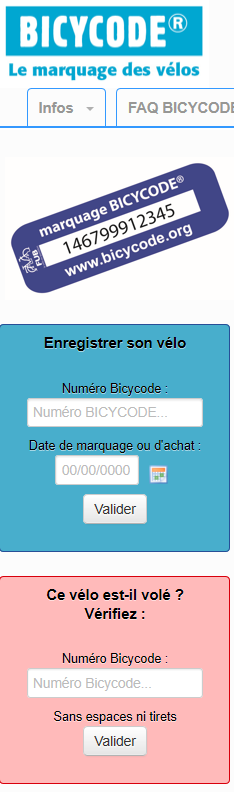
La pollution.
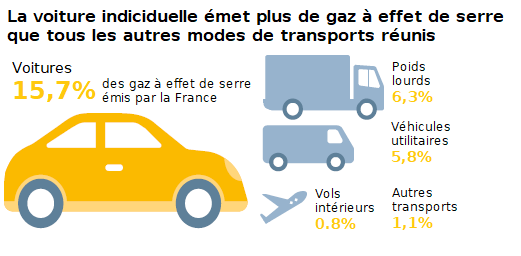
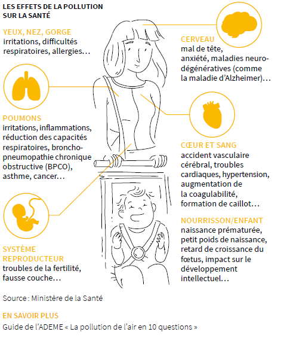
Les accidents.
- En vélo il y a 17 millions de pratiqaunts réguliers, 160 sont tués et 1500 sont grièvement blessés.
- Une étude réalisée en 2012, par l'Observatoire régional de santé d'Ile-de-France apporte une réponse fort intéressante sur le sujet. Elle a en effet confronté les bienfaits et les risques liés à l'usage de la bicyclette comme moyen de transport. Et les bénéfices du vélo sont 20 fois supérieurs à ses risques !
La vitesse.
Leurs vitesse de ne dépasse pas les 25km/h. Il faut savoir qu'en moyenne, vous rouler à 19km/h, donc plus vite qu'un vélo classique (15km/h)
Les pistes cyclables.
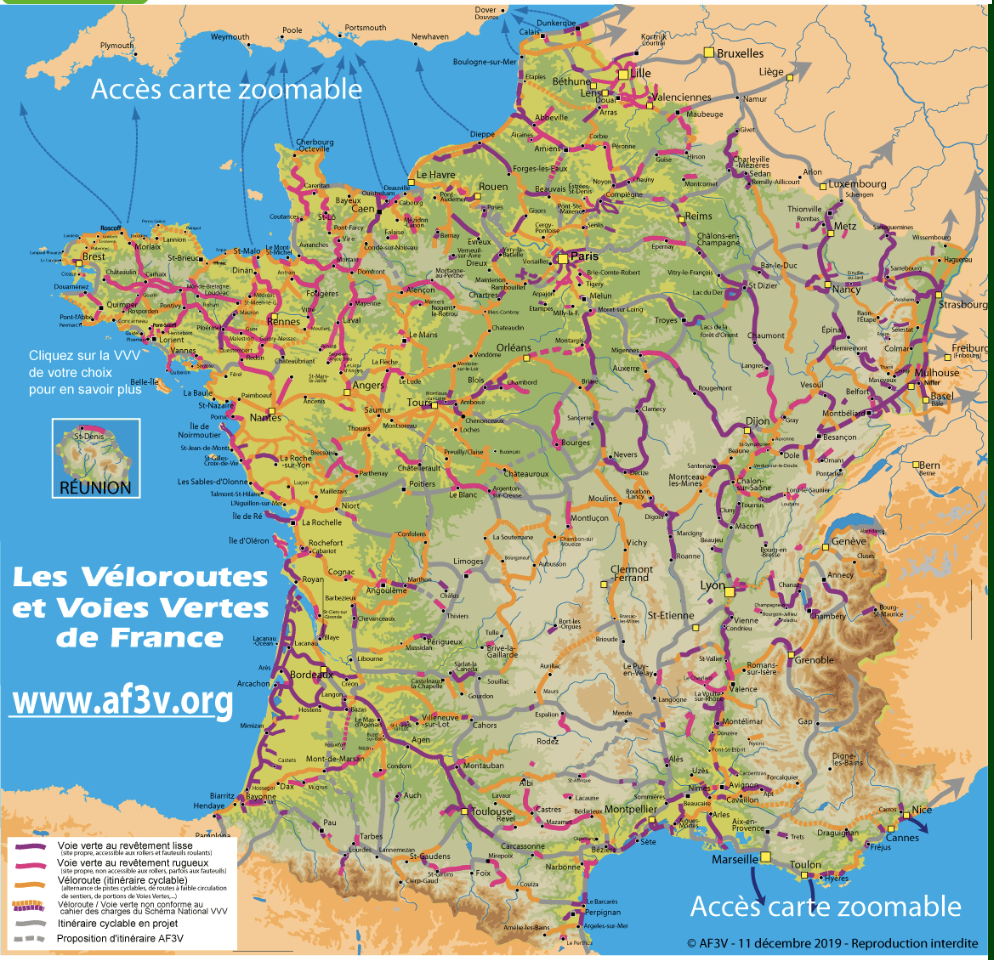
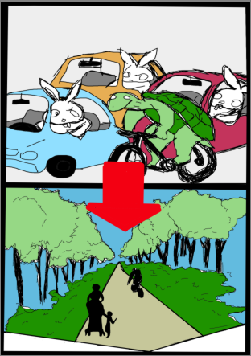
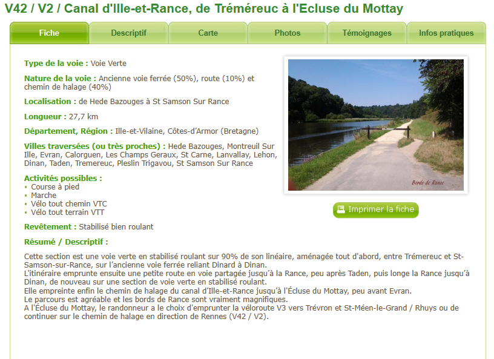
La santé.
- Pour un citadin, se déplacer à vélo constitue donc l'un des plus sûrs moyens d'avoir sa dose quotidienne d'activité physique... et de s'offrir ainsi une garantie santé. C'est en tout cas ce que montre une vaste étude danoise réalisée en 2000 sur 30 000 hommes et femmes de 20 à 93 ans : elle conclut que l'usage du vélo dans les déplacements domicile-travail entraîne une réduction du risque de mortalité précoce de 28 % !
- La réduction des risques pour quelques grandes pathologies : moins 24% pour les maladies vasculaires cérébrales, moins 15% pour les cancers du sein, moins 40% pour les cancers du côlon,...
La forme physique.
Moins de fatigue qu'un vélo normale, car il aide sur les montées. Mais il faut quand même pédaler pour que l'assistance électrique ce mette en route.
Le cout annuel.
- La voiture pèse lourd dans le budget des Français. D’après l’ACA (Automobile Club Association), en 2017, ces derniers ont dépensé en moyenne 6000€ par an pour leur auto. Ce montant inclut l’achat-reprise d’un véhicule, les frais financiers (c’est-à-dire les intérêts liés au crédit auto), l’assurance, le carburant, l’entretien, le garage et les péages.
- Le prix d’un vélo électrique est extrêmement variable : entre 700 et 1200€, le choix est déjà large mais il ne faut pas être trop exigeant sur la qualité des finitions.
- Entre 1200 et 3000€, vous avez des vélos urbains bien équipés et de très bonne qualité ainsi que des VTT convenables.
C’est cher, oui, mais le prix sera vite amorti si vous utilisez votre VAE au lieu de la voiture ou des transports en commun pour vos petits déplacements quotidiens.
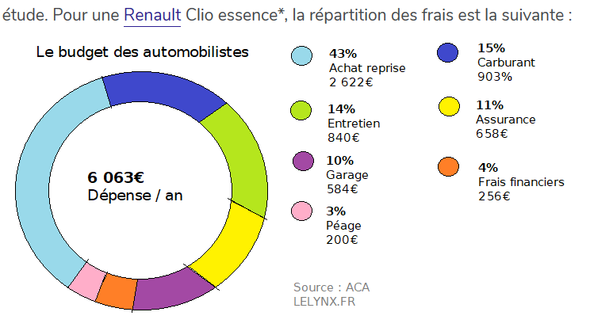
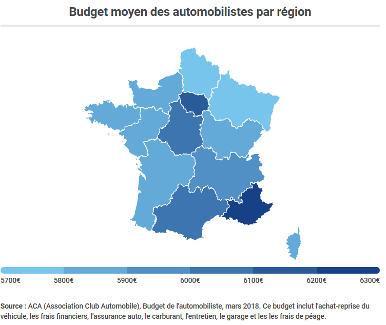
En plus.
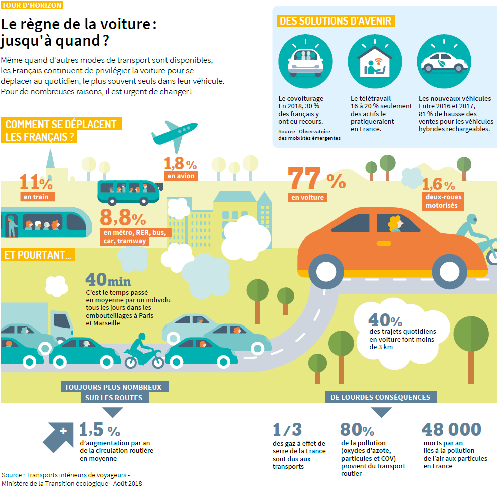
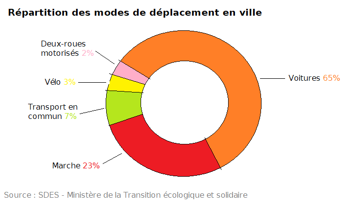
La FUB.
Code de la route vélo
Voici les flyer de la sécurité routière et de la IBSR à vélo :
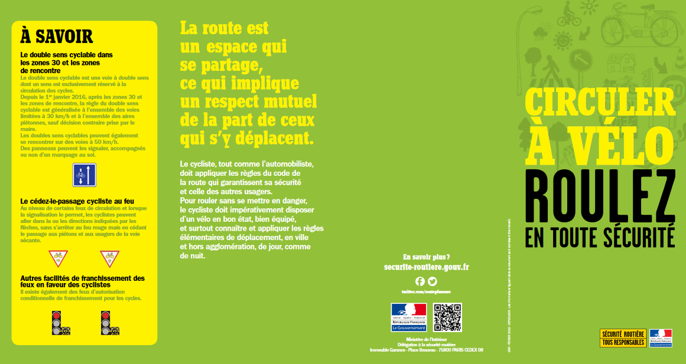
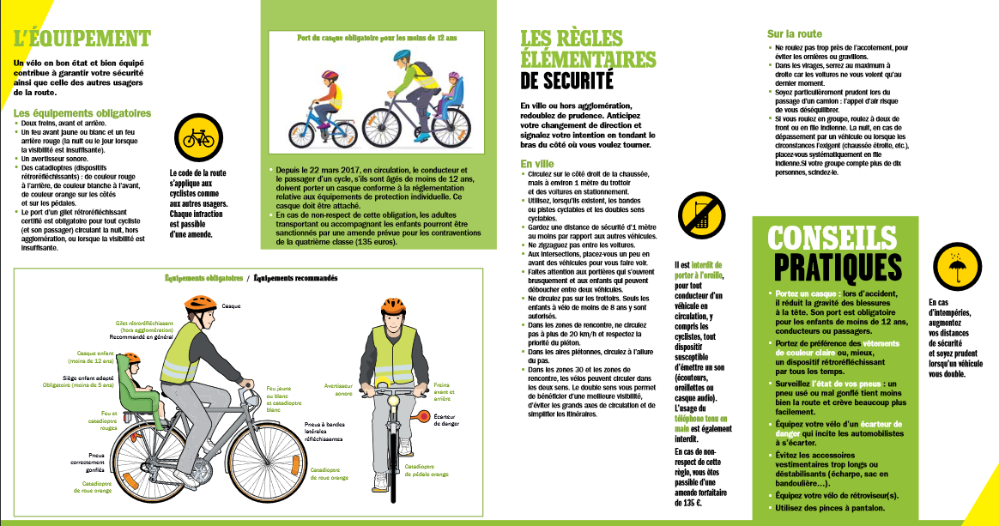
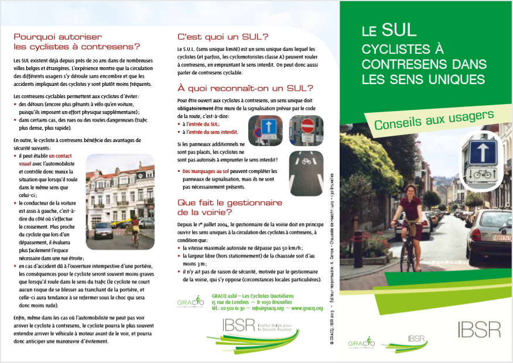
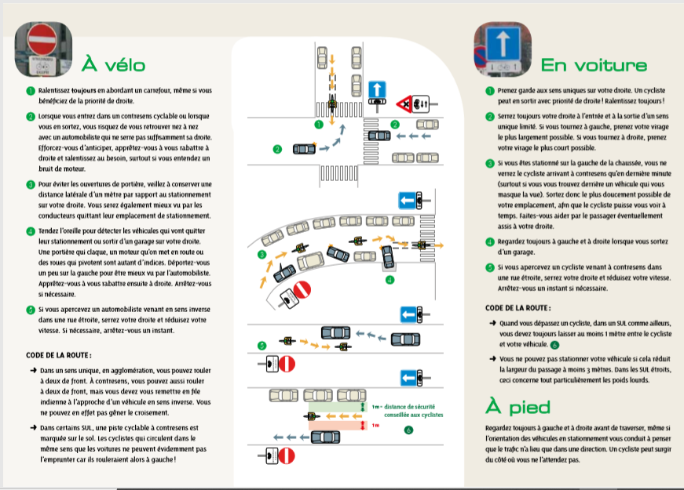
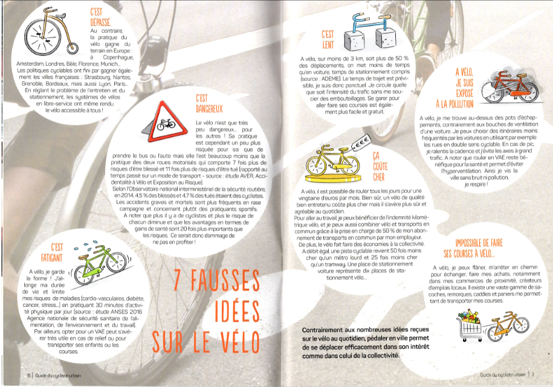
Mobil'Rance
Information sur notre service de location solidaire, pour toutes information supplémentaire, différents liens en bas de page :
Cette page vous est offerte par l'association Steredenn - Mobil'Rance :
Numéro de téléphone : 02.96.39.50.66
Mail : mobilite@steredenn.org
Lien vers le site de l'association
Vous pouvez aussi nous suivre sur notre page Facebook : @mobilrancedinan